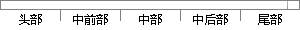

登录模块实现了注册、登录、退出登录功能，且测试通过并且无崩溃现象出现。
片段位置图

相似结果|
相似片段 1：，并且记录下了每个功能模块测试过程中出现的问题或功能缺陷。下面详细介绍本系统的各项测试结果。(1)注册登录模块功能测试结果如表 6-1所示：表 6-1 注册登录模块功能测试表Table 6-1
相似片段 2：实现进一步处理数据的功能。505.5.1 系统登录系统登录主要包括登录和退出功能，点击登陆可以进入系统注册模块，如图5.6 所示。图 5.6 系统登录5.5.2 系统注册在系统注册模块，用户可以注册成为
相似片段 3：功能模块实现的具体功能如下：图 5-1 玻璃钢船艇报价管理系统功能模块图（1）登录模块 用户登录模块主要完成的功能是威海中复西港船艇有限公司报价工作人员的用户注册、安全登录以及用户的安全退出等功能。在用
|
※ 片段修改建议 ※
近似词参考：- 功能：功效
- 并且：而且
- 崩溃：解体 溃散 溃逃 瓦解
- 现象：征象
- 出现：呈现 泛起 涌现
系统自动生成语句： 登录模块实现了注册、登录、退出登录功效，且测试通过而且无解体征象呈现。
注：本片段修改建议为系统自动生成，仅供参考。